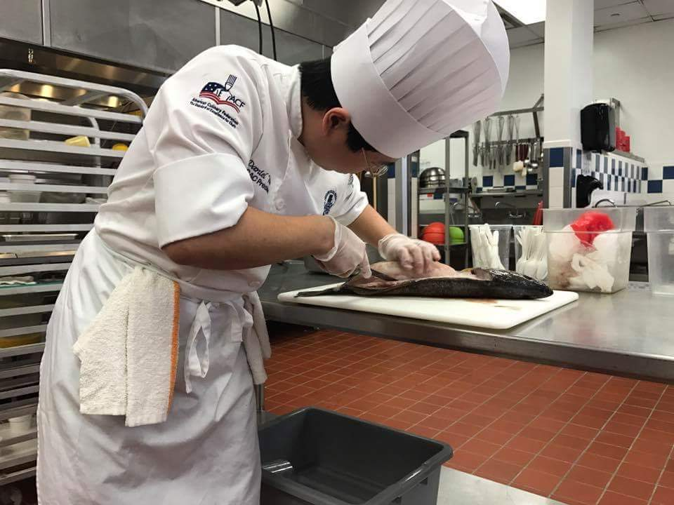

Daniel Wernz
Student at Eastern Florida State College
Founder and Student President of NSLS EFSC Chapter
Student President of EFSC Palm Bay's Technology Club
I am a B.A.S. in computer information systems technology student at Eastern Florida State College. I graduated with my A.S. in computer programming and analysis in December 2020. I have an A.S. in culinary arts from Le Cordon Bleu College for Culinary Arts Orlando. I have worked in numerous kitchens including Mythos and Kohola in Universal Studios Florida (evening helping open Volcano Bay), and The Greenbrier Resort. In October 2018, a virus attacked my nervous system that made it difficult to stand and walk. I stuggled to recover and slowly got worse. In September 2019, my wife and I left the Greenbrier and moved back to Florida for me to rest and recover, and to start learning to program.
LinkedIn
Github
Education
- Eastern Florida State College
- B.A.S. Computer Information Systems Technology
January 2021 - December 2021
GPA: 4.0
- A.S. Computer Programming and Analysis
January 2020 - December 2020
GPA: 4.0
- Le Cordon Bleu College of Culianry Arts Orlando
- A.S. Culinary Arts
July 2015 - March 2017
GPA: 4.0
Work Experience
- The Greenbrier Resort
- Junior Apprectice
- November 2017 - September 2019
- White Sulphur Springs, WV
- Andrei's
- Line Cook
- April 2017 - October 2017
- Mims, FL
- Mythos
- Line Production Cook
- November 2016 - September 2017
- Orlando, FL
- Kohola Reef Cabana
- Line Production Cook / Second Cook
- May 2017 - June 2017
- Orlando, FL
- Le Coq au Vin
- Cook
- November 2016 - January 2017
- Orlando, FL
- Le Cordon Bleu College of Culinary Arts Orlando
- Student Worker
- November 2015 - December 2016
- Orlando, FL
- BSC America
- Lane Captain Coordinator
- April 2014 - February 2015
- Bel Air, MD
- Sports Memories
- Photographer
- October 2011 - November 2014
- Baltimore, MD
- Pool n' Pints
- Line Cook
- April 2014 - July 2014
- Aberdeen, MD
- Price's Seafood
- Head Cook
- May 2012 - January 2014
- Bel Air, MD
- Anything Automative LLC
- Assistant
- August 2011 - May 2013
- Harve de Grace, MD
My Hobbies